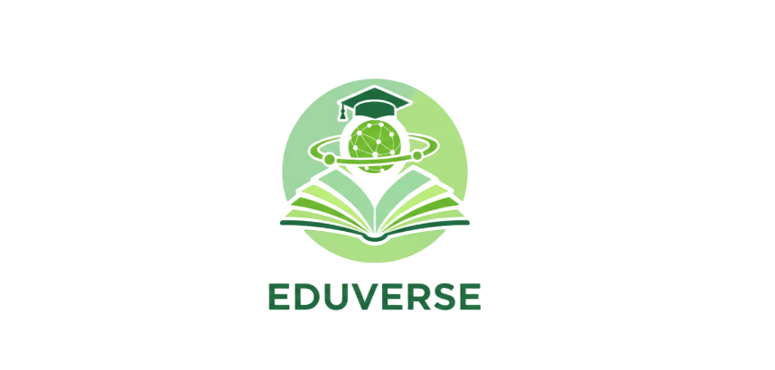

Eduverse Platform
Backend para plataforma educacional digital. Arquitetura robusta utilizando Java, Spring Boot e PostgreSQL. Integração de APIs e modelagem de banco de dados.
Ver no GitHub →Estudante de Ciência da Computação na UNICAP e Consultor de Projetos na EJ Unicap. Foco em arquitetura de software, automação e desenvolvimento de sistemas robustos.
Atualmente cursando Ciência da Computação na UNICAP (2025-2029), atuo como Analista de Projetos na Empresa Júnior, liderando iniciativas técnicas.
Minha paixão começou aos 8 anos, unindo música e código. Hoje, meu foco é tirar a complexidade da frente e deixar o sistema rodar liso atrás, seja criando APIs em Java ou scripts de automação.
Backend & Automação
Disponível para Projetos
Atuação no desenvolvimento de soluções tecnológicas e consultoria. Liderança técnica em projetos internos e gestão de demandas de TI.
Atuação no desenvolvimento de soluções tecnológicas e consultoria. Liderança técnica em projetos internos e gestão de demandas de TI.
Bacharelado com foco em Engenharia de Software e Sistemas. Desenvolvimento acadêmico em algoritmos e estruturas de dados.
Desenvolvimento dos fundamentos de lógica de programação e primeiros projetos práticos em Java e automação.
Backend para plataforma educacional digital. Arquitetura robusta utilizando Java, Spring Boot e PostgreSQL. Integração de APIs e modelagem de banco de dados.
Ver no GitHub →
Engine 2D desenvolvida do zero (from scratch) em C++. Foco em arquitetura de baixo nível, gerenciamento manual de memória, loop de jogo otimizado e renderização de sprites.
Ver Código no GitHub →Automação complexa via n8n integrando Gemini API e Notion. Gera ideias de conteúdo baseadas em RSS feeds e as organiza automaticamente.
Ver Fluxo →
Sistema completo de gestão logística escolar. Controle de rotas inteligentes, alocação de motoristas e faturamento mensal automatizado via ASP.NET Core MVC.
Ver Arquitetura →Simulador de propagação acústica 2D em tempo real, acelerado via GPU usando Taichi Lang.
Ver no GitHub →
Uma ferramenta de simulação numérica de alta precisão em C++ para calcular manobras de pouso (Suicide Burn) com massa variável e arrasto gravitacional não-uniforme. Inclui pipeline de visualização de telemetria em Python.
Ver no GitHub →O que eu exploro quando não estou buildando APIs.
Estudos ativos em Purple Teaming. Familiaridade com ferramentas do Kali Linux (Nmap, Burp Suite) e práticas de Secure Coding (OWASP Top 10).
Entusiasta de arquitetura de computadores. Gosto de entender como o software conversa com o metal, explorando C e Assembly ocasionalmente.
Contribuição e consumo ativo de softwares livres. Acredito na democratização do código e no aprendizado colaborativo.